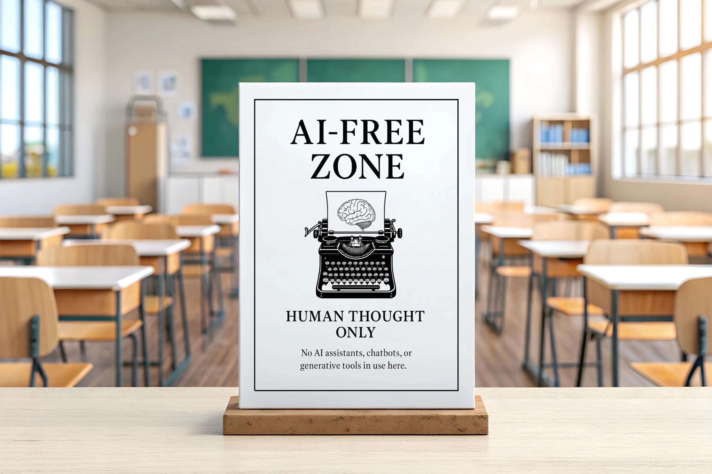

        <section class="slide orb-a" style="display:grid;grid-template-columns:1fr 1fr;padding:0;" data-n="[톤 의외성을 주며] 전략 3. 이건 좀 의외일 수 있어요.
                
                [잠시 멈춤] AI를 안 쓰는 것도 전략입니다.
                
                [청중 반응 확인] 폴란드에서 내시경 진단을 연구한 사례가 있어요. AI 보조 진단이 실제로 더 정확했어요. 그런데요, AI에만 의존하면 의사의 독립적 판단력이 약화됐어요. 그래서 일부러 AI 없이 진단하는 구간을 설계했습니다. 역량을 유지하기 위해서요.
                
                Malone이 106개 실험을 메타분석했는데, 사람+AI가 항상 더 나은 게 아니었어요. 어떤 업무는 사람만이, 어떤 업무는 AI만이 더 나았습니다.
                
                [느리게] 모든 업무에 AI를 끼우는 게 아니라, 업무별로 '사람만 / AI만 / 사람+AI'를 판단하는 겁니다.
                
                플랫폼을 세 가지로 나눈 것도 같은 원리예요. 범용은 에이닷 비즈, 마케팅은 폴라리스, 코딩은 플레이그라운드. 모든 업무에 같은 AI를 쓰는 게 아니라, 골라 쓰는 겁니다.
                
                [킥] AI를 잘 쓰는 팀과 못 쓰는 팀의 차이는, 어디에 안 쓸지를 아느냐입니다.">
                                                  <div class="layer-mid" style="background:radial-gradient(ellipse at 30% 50%,rgba(77,201,196,0.15) 0%,transparent 45%);"></div>
                                        
                                                  <!-- 좌측: 이미지 -->
                                                  <div style="display: flex; align-items: center; justify-content: center; padding: 48px 4vw; position: relative; z-index: 1; left: 70px; top: 85px;">
                                                    <div style="width: 100%; max-width: 480px; border-radius: var(--radius); overflow: hidden; box-shadow: rgba(0, 0, 0, 0.5) 0px 8px 32px, rgba(255, 255, 255, 0.06) 0px 0px 0px 1px; position: relative;">
                                                      
                                                    </div>
                                                  </div>
                                        
                                                  <!-- 우측: 텍스트 -->
                                                  <div style="display: flex; flex-direction: column; justify-content: center; padding: 48px 5vw; position: relative; z-index: 1; border-left: 1px solid var(--line); left: 11px; top: 43px;">
                                                    <div class="tag">전략 5</div>
                                                    <h2 style="text-align: left; font-size: clamp(28px, 3vw, 44px);"><span class="em" style="">안 쓰는 것</span>도 전략이다</h2>
                                        
                                                    <div style="margin-top:24px;display:flex;flex-direction:column;gap:16px;max-width:460px;">
                                                      <div style="background: rgba(77, 201, 196, 0.06); border: 1px solid rgba(77, 201, 196, 0.2); border-radius: var(--radius); padding: 20px 22px; box-shadow: rgba(0, 0, 0, 0.4) 0px 4px 20px; position: relative; left: 0px; top: 0px;">
                                                        <div style="font-size:13px;color:var(--teal);text-transform:uppercase;letter-spacing:.1em;margin-bottom:8px;">폴란드 내시경 연구</div>
                                                        <div style="font-size: clamp(15px, 1.3vw, 19px); color: var(--white); line-height: 1.6; position: relative;">AI 보조 진단의 정확도가 <strong style="color:var(--teal);">더 높았다.</strong><br>그런데 AI에만 의존하면<br>의사의 독립적 판단력이 약화<div><br><strong style="color: var(--teal);">일부러 AI 없이 하는 구간</strong>을 두어 역량 유지</div></div>
                                                      </div>
                                        
                                                      <div style="background:rgba(212,165,116,.05);border:1px solid rgba(212,165,116,.2);border-radius:var(--radius);padding:20px 22px;box-shadow:0 4px 20px rgba(0,0,0,.4);">
                                                        <div style="font-size:13px;color:var(--copper);text-transform:uppercase;letter-spacing:.1em;margin-bottom:8px;">Malone &amp; Vaccaro — 106개 실험 메타분석</div>
                                                        <div style="font-size: clamp(15px, 1.3vw, 19px); color: var(--white); line-height: 1.6; position: relative;"><strong>사람+AI가 항상 최선은 아니었다.</strong><br>어떤 업무는 사람만이, 어떤 업무는 AI만이 더 나았음.<br><span style="color:var(--copper);font-weight:600;">→ "전부 AI" ✗ &nbsp; "업무별 판단" ✓</span></div>
                                                      </div>
                                                    </div>
                                        
                                                    <div class="ref" style="position:static;margin-top:20px;">Hinds &amp; Sutton (HBR, 2025) / Malone &amp; Vaccaro (2024). MIT</div>
                                                  </div>
                                                </section>
